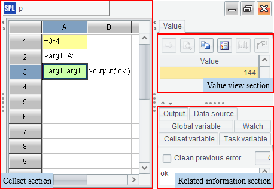
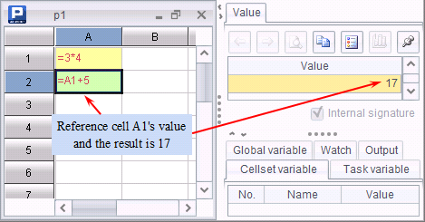
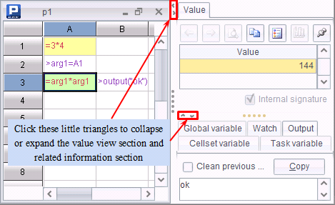
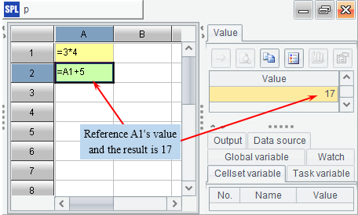

1.1.2 Basic Uses
Run esProc main program to open the esProc software, click on the icon to create a cellset file.

The left part is the Cellset section, where the cellset of code you are working with is shown. On the upper area of the right part there is the Value view section and on the lower area there is the Related information section, in which the System information section shows the system output. The System information section, the Value view sectionand the Related information section are collapsible and expandable. 
In esProc, if a cell has a value, then its name can be used in a calculation cell or an executable cell to reference the cell value. A cell possessing a value can be a constant cell, a calculation cell or a cell that gets assigned by the executable cell. The name of a cell includes the letter representing the column in which the cell is located and the integer – the serial number of the row it resides. In the above cellset, the expression in cell A2 calls the value of cell A1. The following is another example:

Different from Excel, in esProc the letter in the cell name must be capital.
esProc provides a rich variety of functions to handle different kinds of data computing tasks. For example:
|
|
A |
|
1 |
66.8 |
|
2 |
=if(A1>=80, "Heavyweight", "Others") |
|
3 |
=if(A1>=80:"Heavyweight", A1>=68:"Middleweight", A1>=58:"Lightweight", "Flyweight") |
Click A2 an A3 respectively to view their values in the value view section:
 
esProc also has an auxiliary functionality of function editing to make code-writing in cells easier. During editing the expression in a cell, press Alt+¡ýto open or close this auxiliary functionality. On the interface of the auxiliary functionality of function editing, you can see the corresponding function syntax, function description and other information:
